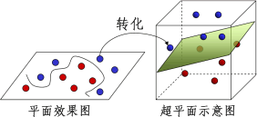
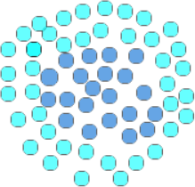
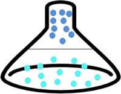

SVM解决线性不可分问题
通过上一节的学习，我们知道 SVM 是一种用来解决性线性不可分问题的算法，那它到底是如何解决的呢？在本节我们将对其做出详细的解释。
在一个棋盘上杂糅的摆放着黑白两种棋子，要求我们以最快的速度将它们各自分开，这时我们应该如何做呢？也许喜欢金庸武侠的小伙伴已经想到了答案。
假如你是一位拥有深厚内力的大侠，你直接可以拍盘而起，让棋子们飞起来，同时让黑子飞高一点，白子则相对低一些，这样平面无法线性区分的分类问题，瞬间成了在立体空间内使之分类，此时你以迅雷不及掩耳之势，在它们分开的间隔内插上一张薄纸，就可以轻易地将黑、白两种棋子分开。
支持向量机的三大核心构件分别是最大间隔、高维映射以及核函数，高维映射则是支持向量机的第二个核心构件。我们知道线性分类器最大的特点就是简单，说白了就是“一根筋”，当面对非线性分类问题时不知变通，因此就需要帮助它疏通一下，就像解决 Logostic 逻辑回归问题一样，高维映射就是我们要寻找的方法。
如图所示经过高维映射后，二维分布的样本点就变成了三维分布，而那张恰好分开棋子的纸（图 1 呈现绿色的平面）， SVM 统称其为“超平面”。
通过增加一个维度的方法（给平面增加一个高度，使其变成三维空间），解决“线性不可分的问题”。在上述过程中仍存在一些问题会令你困惑，比如为什么映射到高维后就一定能保证正负类分开，还有一个更令人挠头的问题，这个高维空间应该如何找呢，以及在新的空间中，原有的数据点的位置是如何确定的呢？要想知道答案，不妨继续往下读。
核函数是一类功能性函数，类似于 Logistic 函数。SVM 规定，只要能够完成高维映射功能的数学函数都称为“核函数”，它在支持向量机中承担着两项任务，一是增加空间的维度，二是完成现有数据从原空间到高维空间的映射。接下来对其做详细的介绍。
首先我们再次强调 SVM 是一种使用线性方法来处理线性不可分问题的算法。明确了这一点，下面再来看一个实例说明，对于 “你中有我，我中有你”这句话来说，最为经典的案例，当属一类数据包围了另外一类数据。如下图 2 所示：
深蓝色的的球，被另外一种淡蓝色的球体包裹住了，在这种情况下，任何一条直线都不能将它们分开，因此就无法使用线性函数直接实现类别划分。
现在我们变通一下使用高维映射的思维来解决一下，看看能否找到解决问题的突破口。
接下来，我们将深蓝色的数据点全部映射到一个三维空间内，使之与浅蓝色的数据点形成高度差，这样就可以使用线性函数完成不同样本点的分类了，就如同倒扣的漏斗，深蓝色的数据点全部集中与上方，而浅蓝色的则分布在漏斗底部，此时可以用一个平面（此处平面就是超平面）将它们分开，如图 3 所示中间的分割线。
上述高维映射过程是通过核函数（或称映射函数）来实现的，通过这个函数就可以找到一个三维空间，并确定数据点分布，至于能否保证样本点完全分开，这也是由核函数决定的。那么这个核函数要怎么确定呢，这就要通过实际案例的分析、运算才能得到。
SVM 算法是用来解决线性不可分的“非线性”问题， 从而突破线性分类的局限性，使得线性分类器依然可以适用于“非线性”问题。在这个过程中起到关键作用的就是“高维映射”。而“间隔最大化”可以看做支持向量机的损失函数，它衡量分类效果是否最佳的“标尺”，让间隔达到最大就是 SVM 追求的至臻境界，要实现这个目标就要不断地训练模型，使模型的泛化能力最佳。
最后对 SVM 算法进行分类的大致过程进行总结，大致分为以下三步：
让棋子飞起来
首先我们来回味一下《初识 SVM支持向量机算法》一节提到的案例：在一个棋盘上杂糅的摆放着黑白两种棋子，要求我们以最快的速度将它们各自分开，这时我们应该如何做呢？也许喜欢金庸武侠的小伙伴已经想到了答案。
假如你是一位拥有深厚内力的大侠，你直接可以拍盘而起，让棋子们飞起来，同时让黑子飞高一点，白子则相对低一些，这样平面无法线性区分的分类问题，瞬间成了在立体空间内使之分类，此时你以迅雷不及掩耳之势，在它们分开的间隔内插上一张薄纸，就可以轻易地将黑、白两种棋子分开。
注意：上述示例只是类比，示例中的棋子，也只是一个个“样本点”。
回到现实世界中我们只是普通人，并非武侠小说中的大侠，因此不能凭借内力让棋子飞起来。既然不能用内力来解决问题，那么我们应该如何做呢？下面回归到本节的主题——支持向量机，它也是一本武功秘籍，掌握了它，同样可以让“棋子”飞起来。下面就一起来看看支持向量机是如何让“棋子”飞起来的”。SVM高维映射
宋朝的苏轼有诗云“横看成岭侧成峰，远景高低各不同，不识庐山真面目，只缘身在此山中”诗的前两句指的从不同的角度看待一个事物会得到不一样的结果，用这句诗来引出的“高维映射”这个概念再合适不过了。支持向量机的三大核心构件分别是最大间隔、高维映射以及核函数，高维映射则是支持向量机的第二个核心构件。我们知道线性分类器最大的特点就是简单，说白了就是“一根筋”，当面对非线性分类问题时不知变通，因此就需要帮助它疏通一下，就像解决 Logostic 逻辑回归问题一样，高维映射就是我们要寻找的方法。
1) 超平面
高维映射主要是用来解决“你中我，我中有你”的分类问题的，也就是前面所说的“线性不可分问题”，所谓高维映射就是站在更高的维度来解决低维度的问题。
我们都知道点线面可以构成三维立体图，比如棋子是棋盘上的“点"，“间隔”是棋盘上的一条线，棋盘则是一个“面”，而当我们拍盘而起，棋子飞升就会形成一个多维的立体空间，示意图如下：

图1：超平面示意图
如图所示经过高维映射后，二维分布的样本点就变成了三维分布，而那张恰好分开棋子的纸（图 1 呈现绿色的平面）， SVM 统称其为“超平面”。
通过增加一个维度的方法（给平面增加一个高度，使其变成三维空间），解决“线性不可分的问题”。在上述过程中仍存在一些问题会令你困惑，比如为什么映射到高维后就一定能保证正负类分开，还有一个更令人挠头的问题，这个高维空间应该如何找呢，以及在新的空间中，原有的数据点的位置是如何确定的呢？要想知道答案，不妨继续往下读。
SVM核函数
要想解决上述问题，就必须要了解支持向量机的另外一个重要部件——核函数（Kernel Function）。核函数是一类功能性函数，类似于 Logistic 函数。SVM 规定，只要能够完成高维映射功能的数学函数都称为“核函数”，它在支持向量机中承担着两项任务，一是增加空间的维度，二是完成现有数据从原空间到高维空间的映射。接下来对其做详细的介绍。
首先我们再次强调 SVM 是一种使用线性方法来处理线性不可分问题的算法。明确了这一点，下面再来看一个实例说明，对于 “你中有我，我中有你”这句话来说，最为经典的案例，当属一类数据包围了另外一类数据。如下图 2 所示：
深蓝色的的球，被另外一种淡蓝色的球体包裹住了，在这种情况下，任何一条直线都不能将它们分开，因此就无法使用线性函数直接实现类别划分。

图2：SVM核函数应用
图2：SVM核函数应用
现在我们变通一下使用高维映射的思维来解决一下，看看能否找到解决问题的突破口。
接下来，我们将深蓝色的数据点全部映射到一个三维空间内，使之与浅蓝色的数据点形成高度差，这样就可以使用线性函数完成不同样本点的分类了，就如同倒扣的漏斗，深蓝色的数据点全部集中与上方，而浅蓝色的则分布在漏斗底部，此时可以用一个平面（此处平面就是超平面）将它们分开，如图 3 所示中间的分割线。

图3：SVM高维映射
图3：SVM高维映射
上述高维映射过程是通过核函数（或称映射函数）来实现的，通过这个函数就可以找到一个三维空间，并确定数据点分布，至于能否保证样本点完全分开，这也是由核函数决定的。那么这个核函数要怎么确定呢，这就要通过实际案例的分析、运算才能得到。
在 Pyhthon Sklearn 库提供了多种核函数，使用不同的核函数会对最终的分类效果带来不同程度影响，因此要选择使得分类效果最优的核函数。
因此高维映射和核函数看似是两个分开的部件，其实是一个整体，高维映射的核心就是“核函数”。更通俗地讲，高维映射只是一种指导思想，而核函数才是具体实践者。总结
通过这两节的学习，我们认识了 SVM 重要组部分间隔最大化和高维映射（将它与核函数看做一体），下面对已经学习的知识做简单总结：SVM 算法是用来解决线性不可分的“非线性”问题， 从而突破线性分类的局限性，使得线性分类器依然可以适用于“非线性”问题。在这个过程中起到关键作用的就是“高维映射”。而“间隔最大化”可以看做支持向量机的损失函数，它衡量分类效果是否最佳的“标尺”，让间隔达到最大就是 SVM 追求的至臻境界，要实现这个目标就要不断地训练模型，使模型的泛化能力最佳。
最后对 SVM 算法进行分类的大致过程进行总结，大致分为以下三步：
- 选取一个合适的数学函数作为核函数；
- 使用核函数进行高维映射，解决样本点线性不可分的问题；
- 最后用间隔作为度量分类效果的损失函数，找到使间隔最大的超平面，最终完成分类的任务。
关注公众号「站长严长生」，在手机上阅读所有教程，随时随地都能学习。内含一款搜索神器，免费下载全网书籍和视频。

微信扫码关注公众号